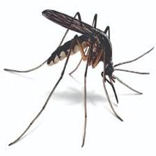

Mosquito

Mosquitoes are small, flying insects that belong to the family Culicidae and are known for their irritating bites.
Female mosquitoes require blood meals for egg production, and they are the ones that typically bite humans and animals.
Mosquitoes are vectors of various diseases, including malaria, dengue fever, Zika virus, and West Nile virus, among others.
Mosquitoes are most active during dawn and dusk and are attracted to areas with standing water, where they lay their eggs.